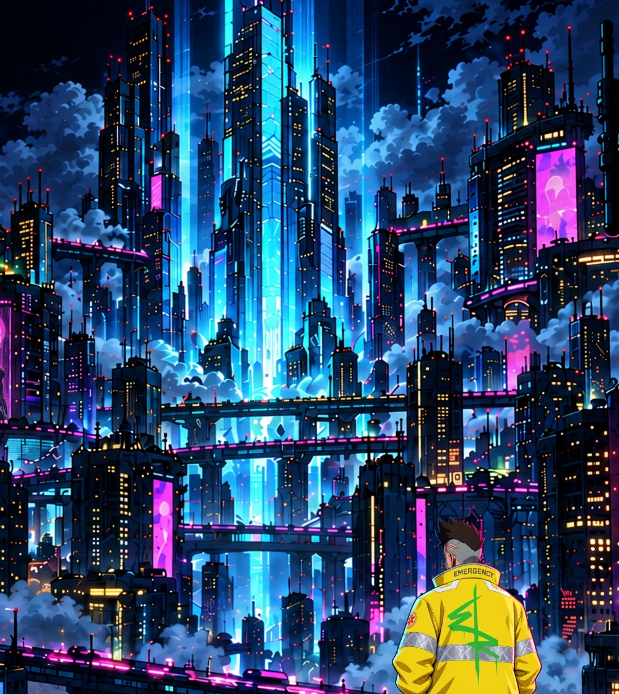
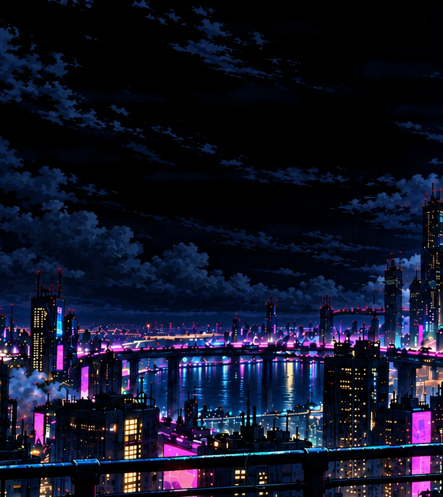
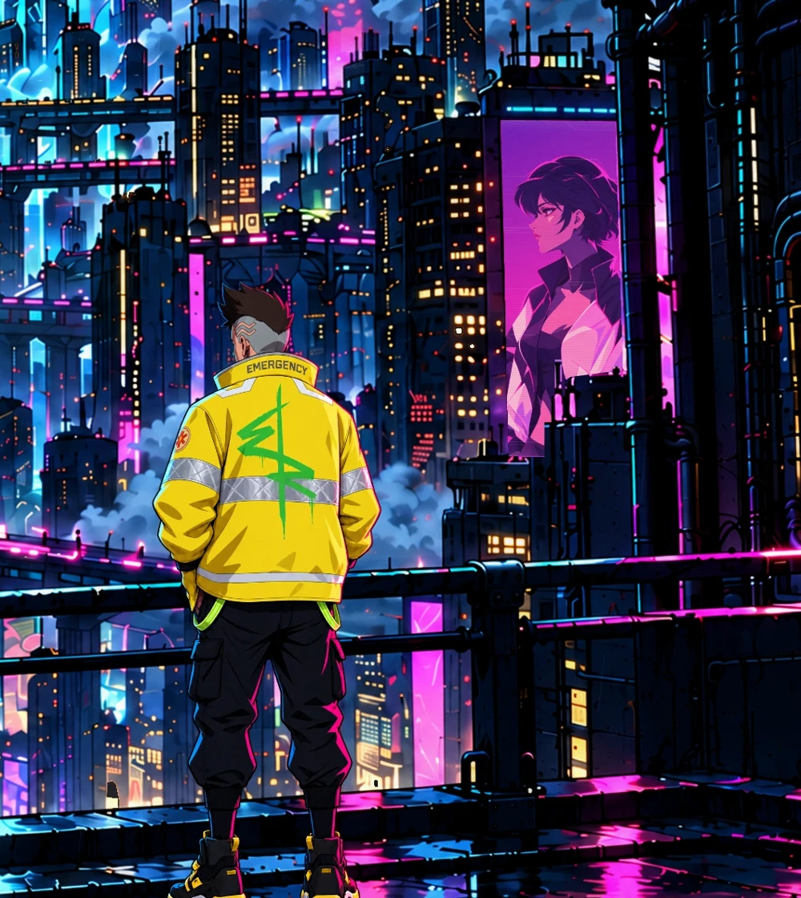
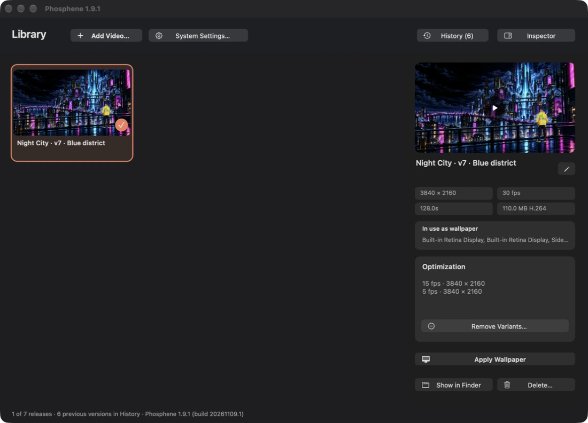
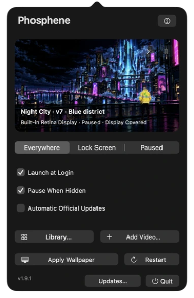
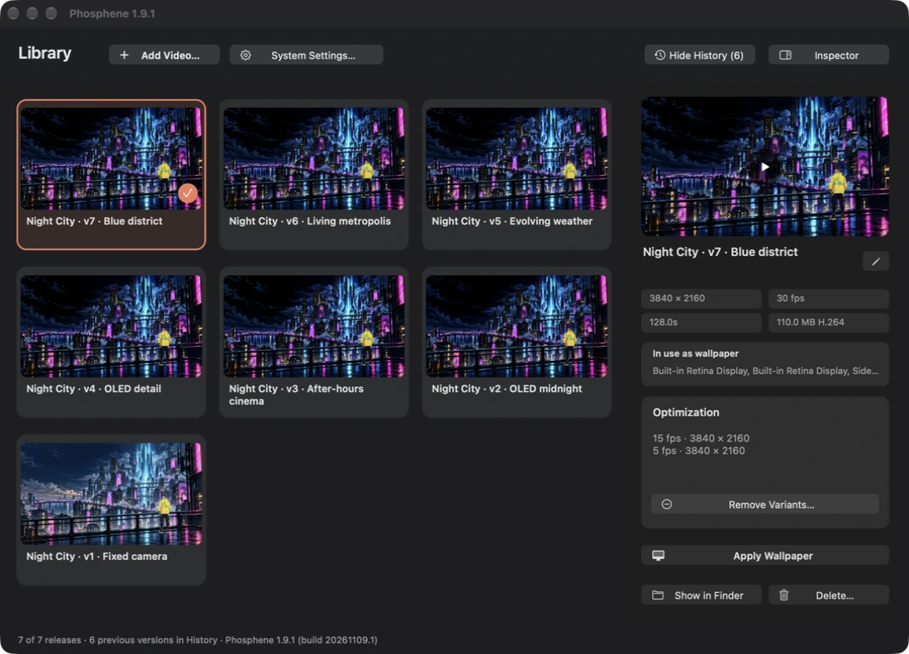
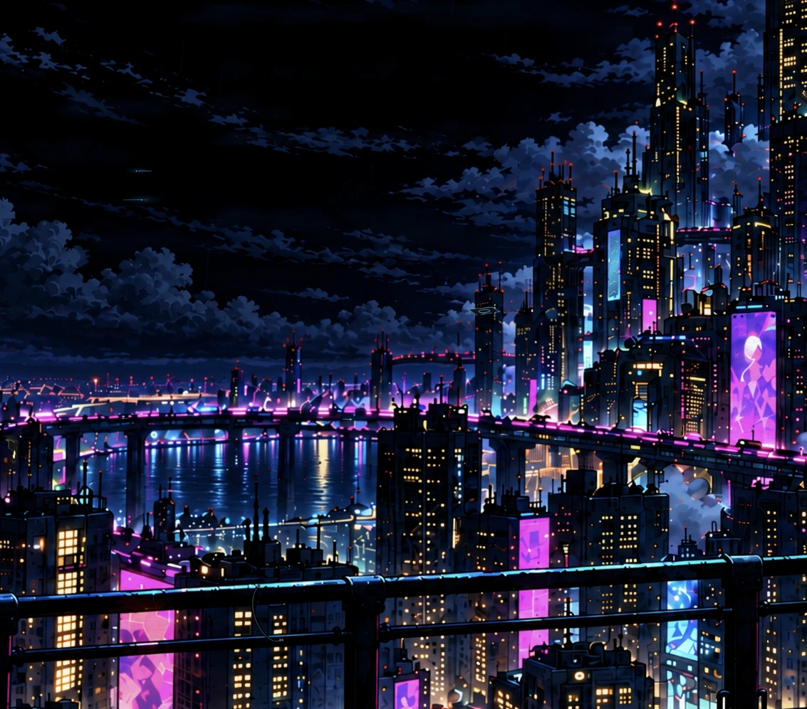
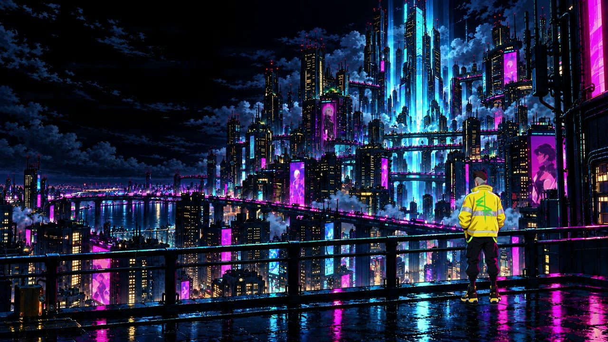

Night City.
Still awake.
Rain in the distance. Light in the windows.
A little life, every time you look up.
The night has
its own rhythm.
The camera stays still. The city does the moving. This Edgerunners-inspired fan artwork is built from layered illustrations and individually timed animation.

Light that lives here.
Windows switch, signs animate and tiny vehicles travel the bridge decks. The main blue light stays steady.

Weather, taking its time.
Drifting mist, changing rain and wet reflections bring depth to the still skyline.

A moment on the rooftop.
Small head glances, breathing and clothing movement. Rare aerial crossings reward a longer look.
Made for a dark desktop, with deep shadows and restrained highlights. The preview is a short excerpt; the download contains the complete 128-second loop.
A living desktop.
A native player.
Phosphene integrates with the macOS wallpaper system. This community edition gives its controller a Rust-built AppKit interface, with the Apple platform services retained in Swift.
App version 1.9.1 · Build 20261109.1
Wallpaper revisions have their own version numbers.


Actual app-window captures. The desktop, personal files and account details are excluded.
One current release.
The latest wallpaper leads the library. History keeps earlier revisions together; title changes keep the same release number.
Apply means apply.
The native Apply Wallpaper action selects the video provider directly, avoiding an MP4 being mistaken for a still image.
At home on macOS.
Desktop and lock-screen integration, launch at login, and pause-when-hidden controls use the existing Phosphene services.
See the release History in the app

See a detail of the actual native desktop

A crop of the native desktop, with personal files and system UI outside the captured area.
Take the night
with you.
Download the current wallpaper or explore its earlier cuts. The original master stays in 4K; lower-frame-rate variants suit quieter playback.

Current release. Fixed camera; no passing train.
Blue district
3840 × 2160 · 30 fps · 128 seconds
Download 4K video
Silent H.264 MP4. Release notes & checksums
Bring it to your desktop.
- Get a player. Use the original Phosphene, or build this Rust community edition.
- Import the video. Choose Add Video in Phosphene and select the downloaded MP4.
- Apply the wallpaper. In this edition, select it in Library and choose Apply Wallpaper. In upstream Phosphene, select its collection in System Settings → Wallpaper.
macOS 26 or later with the required Apple tools for a source build. Private wallpaper APIs may change between OS releases. The community edition is source-only; no signed or notarized app download is provided. Avoid running two copies with the same bundle identifier.
Built on good work.
Credited properly.
An independent fan project, shared with its source and its process. Phosphene and the world that inspired this scene belong to their respective creators.
- Original app & identity
- Phosphene by kageroumado. Original app, wallpaper integration and icon. MIT-licensed; original notices retained.
- This edition
- korisame — direction and curation. Rust adaptation, procedural animation and web presentation developed with OpenAI Codex. The illustration assets were created with AI assistance for this project.
- World & characters
- Cyberpunk: Edgerunners by CD PROJEKT RED and Studio TRIGGER. Cyberpunk 2077, Night City and depicted characters remain the property of their respective owners. No affiliation or endorsement.
- Type & dependencies
- Barlow Condensed by the Barlow Project Authors, SIL Open Font License. Rust, objc2, Swift, AVFoundation, @napi-rs/canvas and FFmpeg support the work. Full credits & licensing.
Code is available under the MIT license, with dependency licenses retained. Fan artwork is separate from the code license; no rights to third-party characters, trademarks or commercial use are granted.